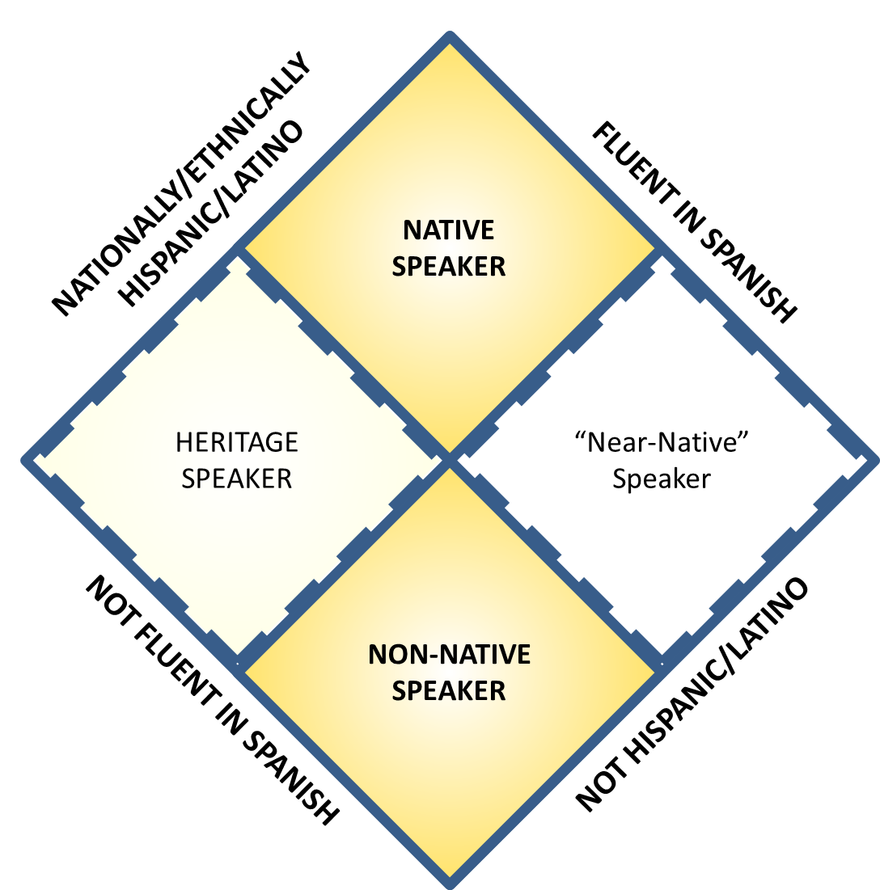

"Language is an attempt at a solution for the conundrum of my identity"
What is a Heritage Speaker?
It is difficult to define a heritage speaker. Generally, scholars agree that heritage speakers are second or third-generation immigrants who have lost, or never fully attained, proficiency in the language of their heritage - that is, their parents' or ancestors' original, national culture. Often Heritage Speakers are exposed to the heritage language in childhood, and exhibit higher proficiency speaking/listening to the language and less to no proficiency in reading/writing the language. Because I base my project in the United States, a heritage language is a non-English language.
Generally, though, what makes the heritage speaker category so useful and so weak is its generality. In a university-level heritage speaker classroom, the variation in proficiency among students can be astounding, and challenging for the professor and students alike.
My Project
Anthropology and linguistics has only turned its attention to the Heritage Speaker category in the last 20 years, and most research on the category has revolved around Latino heritage speakers, specifically Mexican heritage speakers of Spanish, who represent the largest class of heritage speakers in the United States. As a result of this specific basis, or bias, scholarly ideas about heritage speakerhood sometimes overlook the effects of class, nationality, and race that can actually vary the experiences of heritage speakers in the United States from all over the world. I seek to explode the current scholarly perspective on heritage speakerhood by considering speakers from various parts of the world (including Latin America, East Asia, and Eastern Europe) and identifying the differences as well as broad similarities of the heritage speaker experience... assuming there is one generalizable "experience" to speak of at all.
At the same time, I seek to question attitudes that construe heritage speakers as relatively weak actors struggling in a "liminal space" – a gap between two recognized, institutionalized, or otherwise powerful categories of people: native and non-native speakers. The feeling of being neither fully American nor fully ethnic is often cited in scholarship, but is their power in liminality, in hybridity? I am specifically interested in how heritage speakers manage multiple selfhoods or personhoods to adapt to various environments and demands.
The Theory
Ideologies of Linguistic Ethno-nationalism are ways of thinking that associate certain languages with certain nations and ethnicities. According to such ideologies, which are positive as well as normative, Latinos not only do speak Spanish, but should speak Spanish. Likewise, Americans should speak English. These sorts of ideologies underwrite movements such as the "English-only" movement sweeping through the United States, or assumptions that Latinos who don't speak Spanish are somehow "less" Latino than their ethnic counterparts who are fluent in Spanish.
These ideologies of linguistic ethno-nationalism create a regime of speakers categories. At the top of the regime stand the native and non-native speaker categories. These categories are authoritative and unproblematic because language and identity claims align: an American who speaks English, a Russian who speaks Russian. The heritage speaker category is problematic, and thus deprived of legitimacy, because language and identity claims conflict and create cognitive dissonance. A clerk asks an ethnically Latina customer a question in Spanish, and when the customer replies that she doesn't speak Spanish, the clerk remarks, "Oh, I’m sorry, I thought you were Hispanic" (Carreira 2004: 15). To resolve the dissonance, the heritage speaker may be denied her identity by other speakers, and sometimes even by family members.
The Language-Identity Matrix

This is a visual representation of the Regime of Speakers, or "Language Identity Matrix." I have used Latinidad and proficiency in Spanish as an example. When Latinidad and fluency in Spanish align, we see an unproblematic native speaker of Spanish. Likewise, the US-born, non-native Speaker of Spanish has no need to justify himself as a speaker of Spanish because his identity is not at stake. However, dissonant categories such as Heritage Speaker and "Near Native" Speaker appear where identity claims and language proficiency do not intersect. Theory suggests these categories boast considerably less authority and power than their neighbors. Browse the sections at right for more information about each category.